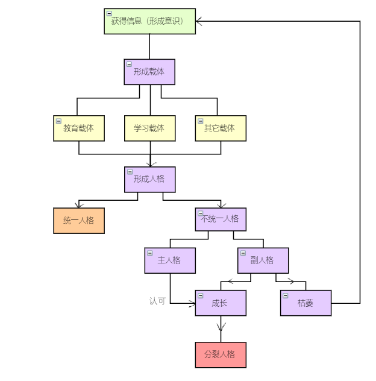

这个tag已经放出来很久了，但是一直没有用，主要是静不下心来写点什么关于心理学方面的东西。正好前几天把lofter上的病号日记扒下来了，打算找机会整理一下发上来，也顺便写（wā）点新的东西（kēng）吧。
声明1：本tag下所有内容均源自我的个人体验、非系统调查与自我分析，如有雷同，很高兴能帮助你；如有不认同，请当做小说的背景设定资料阅读（指梦蚀）。
声明2：本tag下所有内容均源自我的个人体验与自我分析，请勿作为正规心理学文献参考实践，如有因此引发的任何事故，恕本人概不负责。
.+†+.
前言
在很小的时候我就有怀疑过自己有“多重人格”的倾向，在推理杂志上模棱两可且落后的症状参考表上给自己逐条打勾和打叉，从而断定自己是有病的。
现在回想起来固然是很幼稚的行为，杂志上的症状描述也有诸多疏漏，不知是杂志编辑偷懒找了百度文献还是年代久远研究水平不足。也许是因此觉得自己过于中二，稍微长大了一点之后就不再关注这方面的内容了。但在经历过重度抑郁症之后，我还是确切地感知到了自己的人格分裂症状，即DID。
至于小时候看到的杂志，我也没法确切地说是杂志上的内容为我种下了人格分裂的种子，还是天生的人格分裂倾向在冥冥之中推动了我去看到那篇文章。但无论如何这些体验对现在的我来说并不是一种负担，反而是弥足珍贵的宝藏。因为我从小显现出来的创作天赋就于此相关，如果不是拜“人格分裂”所赐，从小在普通城市工薪阶层的家庭长大，没有任何特殊经历的我又如何能塑造出那么多跃然纸上的角色呢？
个人经历分享
原生创作时期
镜音&V家&Utau相关创作时期
高中时代的自我堕落 & Rurutia
鸡血银魂
大学时代的分裂与自救
探索与反思
与“我”相伴的“我们”
因为太长了所以拆开来发，本节是“Shioko”的三个人格介绍【以及互相吐槽，感兴趣的请【移步隔壁文章】
对幼儿人格发育规律的猜想
【并没有经过系统整理的非常散乱的随笔，之后应该会找时间完善一下OTL】
在较早的研究（DSM）中，DID被命名为“多重人格障碍”（Multiple Personality Disorder，MPD），后来在1994年的DSM-IV中更名为“解离型身份识别障碍”（Dissociative Identity Disorder，DID）。日文中将“Identity”翻译为“同一性”，即之前认为的“人格分裂”的产物并不是真正的“人格”，而是主人格的衍生思想（日文wiki的写法是“人格の断片”，不知道怎么确切翻译）。当患者无法将主人格衍生的思想“同一”化而是将它们作为独立的“人格”对待时，就成为了DID。
在现有的研究中一般认为婴儿的人格发育是一个由内向外的过程，即从单一的“自我意识”开始逐渐学习接纳他人存在，变得多元化的过程。
而我的设想是，婴幼儿的人格发育是一个将外界获得的信息统一为“自我”的，将被动接受的“意识”转化为主动表达的“人格”的，由外向内过程。许多人回忆童年时都会提到自己有一个“想象出来的朋友”，在独生子女中这种情况会更加常见。在儿童人格的成长过程中，他们不断从外界获取信息和汲取能量，转化为自己的“满足感”，或者换个说法，“安全感”。
当一个孩子的需求（物质和精神双方面的）能够得到满足时，无疑它会拥有安全感，这种安全感能够促使它们的人格趋向同一化。用直白一些的说法：当一个孩子看见别人笑的时候，他就在意识里得知了“笑”这一社会性行为的概念，而当有别人来逗他笑的时候，他才能在人格层面获得“笑”的能力。这是一种健全的人格的成长方式。而另一种情况，当孩子希望明确的概念无法被解答时，他们就会选择通过其它的方式来探索自己的答案。在这个“自我教育”的过程中，会产生一个专门用来提供信息的区块，而这个区块是必须且难以与主人格统一的。以植物为例，如果它在生长过程中无法得到充足的阳光或是水分，就必须要生长出额外的根系和枝丫来汲取营养，直到它因为缺乏养分而死亡。
幸运的是，得益于人类高度发达的大脑，精神需求上获得满足的代价比物质上的营养获得要廉价得多。在一个孩子得知了“笑”的概念却迟迟无法掌握到“笑”的能力时，他可以在脑海中复制一个与他获得“笑”的概念时相似的情景，将自己置入其中，从而模仿他人的“笑”来完成学习。——而需要注意的是，这个情景中是一定会有“他人”的存在的。而这个虚构出来的“他人”在一开始并不拥有生命，它只是主人格分裂出来的功能性的一部分（即人格的断片），可能会被依托在玩偶或者其它触手可及的事物上并能够进行回收，即前文提到的“将外界获得的信息统一为‘自我’”。但当这种自我学习的过程进行得越多，分裂出来的功能性区块就会越发趋向一个成熟的整体，一个一直陪伴在身边的“伙伴”，一个“他人”。如果一个幻想出来的伙伴所带给我的“满足感”比真实的父母还要多，那么我有什么理由相信它不是真实的呢？
那么在接受信息来完善“意识”的过程中，有两个分工不同的载体产生了，其中一个主要的载体承担学习和发展的职责，另一个则承担复制他人的经历并转化和教育的职责（而这一职责本应该是由父母来完成的）。于是当婴幼儿积累的“意识”开始作为能量转化为主动的表达，并形成“人格”的时候，这两个载体就会拥有截然不同的表达方式。
但这个阶段的不同表达也并不是真正意义上的双重人格，只是两套不同的信息处理系统而已，真正“人格”的形成还需要通过外界的引导来建立。
对一个成绩很好但是爱哭的孩子可能会有两种评价：1、你是个成绩优秀的好孩子，只是有点爱哭；2、虽然你成绩很好，但老是哭是不对的。这两种评价的意义是完全不同的，前者将“成绩优秀”与“爱哭”作为了一个整体给出了折中的评价，这种评价能帮助幼儿将两种不同的表达方式统一为一个整体人格；而后者则是肯定“成绩优秀”却否定“爱哭”，将这两种表现形式描述为独立而对立的——这才是导致“人格”无法完成“同一化”的直接原因，因为两个“意识”的载体无法获得相等的外界能量。
在大部分的情况下，遭到否定的载体会因为无法获得足够的外界认同而逐渐休眠、枯萎以致消失，而因此解放出来的部分“意识”会重新开始学习并转化为（被肯定的）主人格的一部分。
……思路乱了，画个流程图吧；▽；

所以核心观点是：婴幼儿并没有自主的人格，只有通过获得外界信息而形成的意识，而这些意识会拥有不同的载体。在接受正确的教育后，不同的载体能够形成“同一性”的人格，而例外的情况下就会出现人格的分裂，即无法完成“同一化”的现象。
所以我上面那一大段到底在写些什么乱七八糟的……找机会推倒了重新来吧OTLLL
定义
在拥有并存意识（co-consciousness）的解离型身份识别障碍（DID）患者中，存在一种幼年时期的主人格停止生长，而由其它分裂出的人格继续成长并逐渐掌握主要控制权的情况。但在这一类患者中还会存在一部分的特例，停止生长的幼年期主人格仍然拥有身体的控制权，而分裂出的成年人格会成为幼年人格的行为参考和准则（即一个类似监护人的身份），只在必要时或特定场合才会接管患者的身体。
那么这类与停止生长的主人格共存并能够修正主人格行为的成年分裂人格，我就将它命名为监护者人格。
成因
- 童年创伤
童年时的某些异常经历造成的PTSD。
- 依附关系异常
与父母的关系异常，用自我分裂的形式来满足对家庭的需要。
- 社会文化影响
受到的教育与现实生活中存在较大差异，导致认知出现混乱。
- 其它精神障碍或疾病
由重度焦虑/抑郁/强迫症引发的人格解体。
特征
*以下几种情况也被包含在监护者人格之内：
- 幼年主人格不再具有身体控制权，但仍未进入休眠的；
- 主人格发育正常，成年人格修正其它幼年的分裂人格的。
*以下几种情况不被包含在监护者人格之内：
- 幼年主人格已经完全休眠，成年人格代为接管身体的；
- 修正其它幼年分裂人格的成年主人格。
分类
- 安抚型
通过共情和安抚来满足幼年主人格的需要，以温柔的方式引导主人格成长的人格。
自我分化的“母亲”角色。
- 控制型
通过设立严格的目标来规范幼年主人格的行为，以严苛的方式鞭策主人格成长的人格。
自我分化的“父亲”角色。